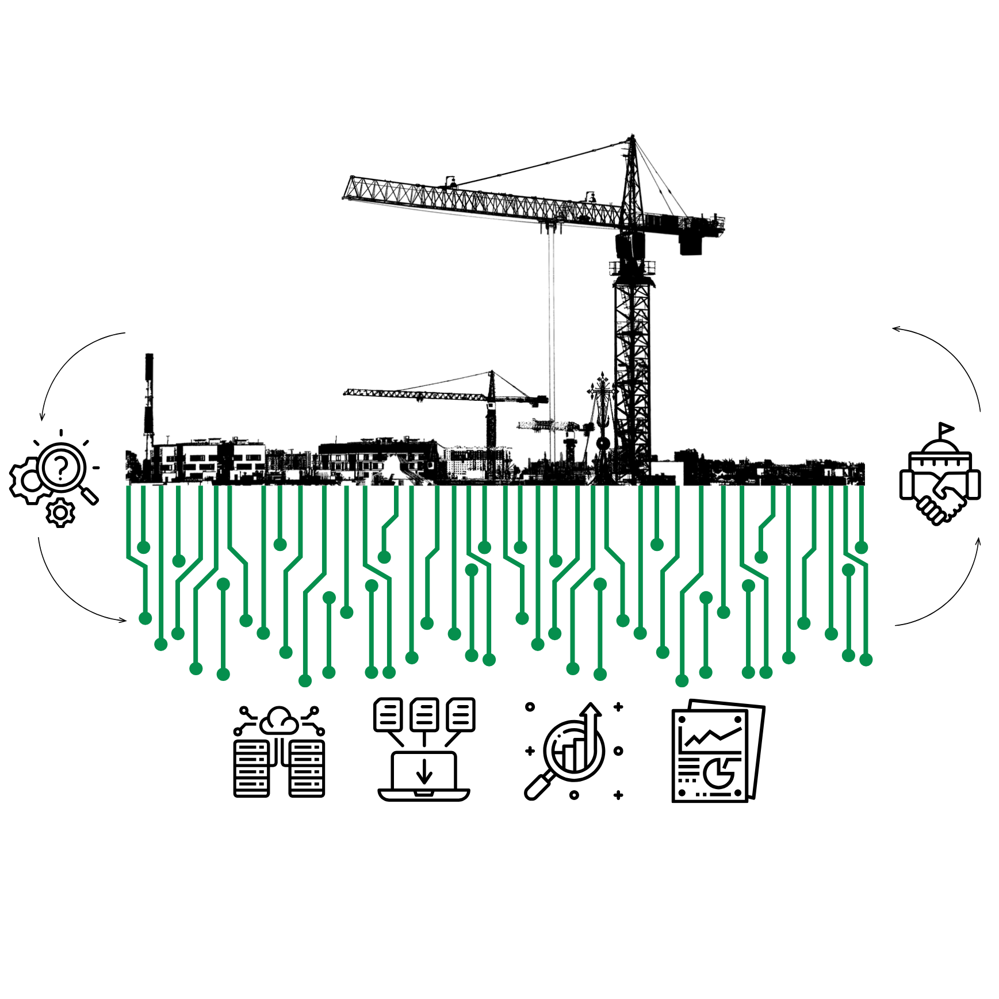
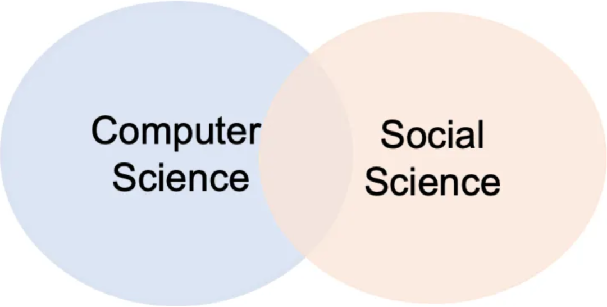
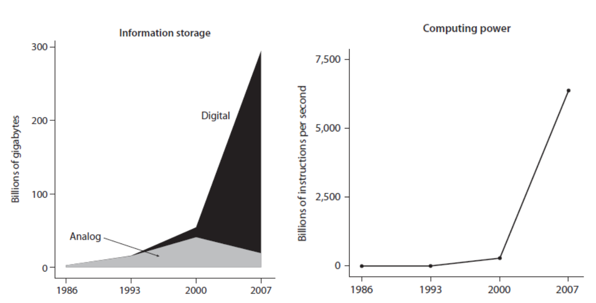
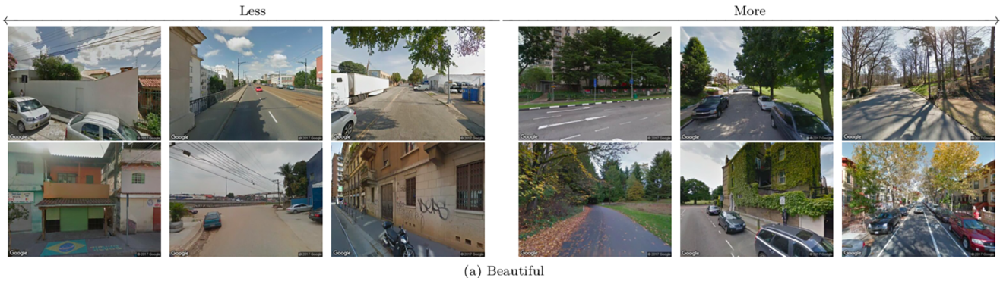
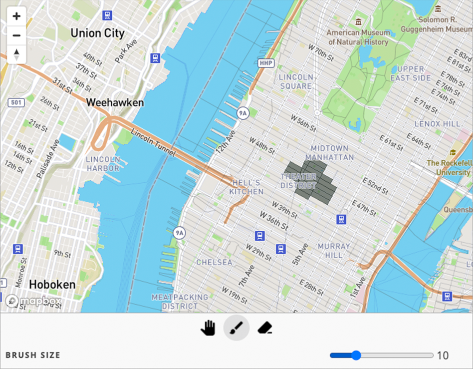
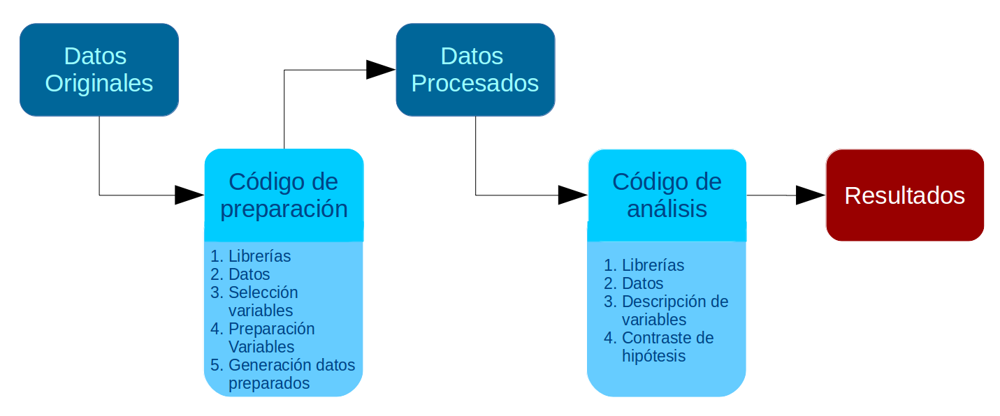
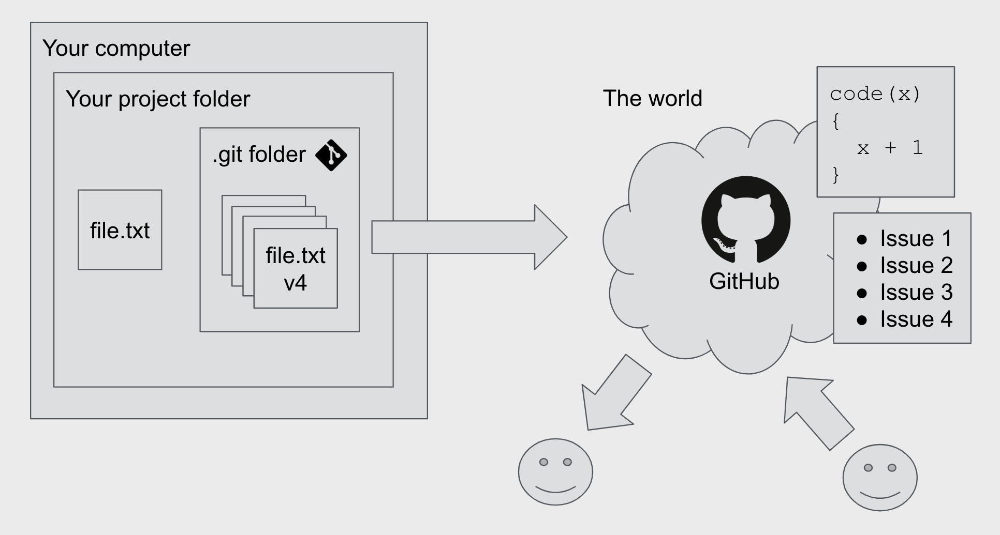

Ciencia Sociales Computacionales
Sesión I: Introducción a la ciencia social computacional y programa del curso
Estructura de la presentación
Presentación del curso
Sobre mí
Formación
Sociólogo y Magíster en Desarrollo Urbano
Actualmente curso un diplomado en Estadística
Especialización
Metodología Cuantitativa
Moldeamiento estadístico
Sociología Urbana
Experiencia
Investigación empírica cuantitativa en COES y Fondecyt
Docencia en RStudio, Ciencia de datos, Metodología Cuantitativa

Sobre ustedes
Nombre
Proyecto de tesis
Especialización teórica y metodológica
Experiencia previa en análisis de datos
Expectativa sobre el curso
Modalidad del curso
Sesiones
12 en total entre el 14 de agosto y el 11 de diciembre
Horario original: incluye 3 bloques de 1 hora cada uno
Horario adaptado: 2 bloques
Parte teórica: entre 10:50 y 11:50
Parte práctica: entre 11:55 y 14:10
Preguntas y participación
Preguntas cortas en cualquier momento
Preguntas elaboradas en las transiciones
Asignación de décimas a quienes planteen buenas preguntas y participen
Foco del curso
Ciencia computacional con foco en herramientas de gestión de proyectos de investigación con datos
Comprensión del por qué y no tanto el como hacemos las cosas
Hoy es más sencillo que antes programar (IA generativa)
¿Qué es la ciencia social computacional?
Definición
La ciencia social computacional es una subdisciplina de las ciencias sociales que utiliza modelos computacionales para comprender el comportamiento humano en el entorno digital.
- huella digital (dato) \(\to\) comportamiento humano (información)
¿Para qué?: para comprender mejor el comportamiento humano ante en la era digital.
Lo computacional no sólo es una herramienta metodológica (como ocurre en el data science), sino que es fundamentalmente un paradigma teórico que orienta el diseño de investigación y el objeto de estudio.

Contexto
Transición de la era de información analógica a la digital. Dos tendencias simultaneas:
- Explosión de la producción y almacenamiento de la información digital \(\to\) big data.
- Crecimiento en el acceso al poder computacional \(\to\) microprocesadores (CPU)
Este curso enmarca la CSS como un cambio de paradigma que altera la naturaleza de las preguntas que podemos formular, las teorías que podemos construir y la evidencia que podemos recopilar

Ciencia Computacional y Sociología
- En nuestro contexto sociológico: la integración entre sociología y ciencia computacional es mucho más sustantiva y, por lo tanto, mucho más compleja en comparación a la ciencia de datos.
- En la era digital los objetos de la sociología se expanden y transforman
- En este sentido, lo “computacional” no es sólo una herramienta para la sociología, sino parte integrante del diseño de investigación.
- ¿Cuál es el objeto de estudio de la ciencia de datos?
El ecosistema de datos digitales
La huella digital
Una parte creciente de la interacción humana deja una masiva “huella digital”: rastros de texto, imágenes, métricas de interacción y metadatos. Estos datos, a menudo generados por empresas y gobiernos, son un recurso invaluable pero también presentan desafíos.
Tipos de Datos Digitales:
Datos Textuales: Publicaciones en redes sociales, reseñas de productos, transcripciones de discursos, corpus de libros digitalizados. Permiten el estudio del lenguaje y el discurso público.
Datos de Red: Conexiones de amistad en Facebook, redes de “seguidores” en X, patrones de colaboración científica, acuerdos comerciales entre países. Revelan la estructura de las relaciones sociales.
Datos Geoespaciales: Datos de GPS de teléfonos móviles, check-ins en lugares, imágenes satelitales. Permiten analizar la movilidad, la segregación y la interacción con el entorno físico.
Datos de Comportamiento: Registros de llamadas, historiales de compra, patrones de navegación web. Ofrecen una visión granular de las acciones y decisiones individuales.
Características de los big data
Los datos digitales masivos tienen características que los diferencian de los datos de encuestas tradicionales:
Siempre activos (Always-on): Se recopilan de forma continua, permitiendo el estudio de dinámicas en tiempo real.
No reactivos: A menudo se recopilan sin que los individuos modifiquen su comportamiento, a diferencia de una entrevista.
Incompletos: Frecuentemente carecen de información demográfica clave.
Inaccesibles: A menudo son propiedad de empresas y su acceso puede ser restringido.
No representativos: Los usuarios de una plataforma específica rara vez son una muestra representativa de la población general.
Deriva (Drifting): Las plataformas cambian sus algoritmas y bases de usuarios, lo que significa que lo que se mide hoy puede no ser lo mismo que se medía ayer.
Métodos de adquisición de datos
APIs (Interfaces de Programación de Aplicaciones): Son puertas de enlace estructuradas que las plataformas (como X, Reddit, YouTube) ofrecen para acceder a sus datos de manera controlada y ética. Permiten a los investigadores solicitar datos específicos sin sobrecargar los servidores de la empresa.
Web Scraping: Es el proceso de escribir un programa para extraer información directamente del código HTML de las páginas web. Es una técnica poderosa pero que requiere una cuidadosa consideración de los términos de servicio del sitio web y de la ética de la recolección.
Bancos de Datos Históricos: Repositorios a gran escala como Seshat, D-PLACE y Clio-Infra proporcionan datos estructurados para el análisis social a largo plazo.

Diseño de investigación y ética en la era digital
Lo nuevo versus lo viejo
Los conceptos tradicionales de diseño de investigación no se abandonan, sino que se adaptan.
- Muestreo y Representatividad: El desafío central es cómo hacer inferencias sobre una población general a partir de datos de una subpoblación específica y a menudo sesgada (p. ej., usuarios de X). Se explorarán estrategias como la post-estratificación para corregir estos sesgos.
- Validez y Fiabilidad: ¿Estamos midiendo realmente el constructo social que nos interesa? La validez de las mediciones digitales (p. ej., usar “likes” como indicador de apoyo político) debe ser evaluada críticamente.
Nuevos diseños de investigación
La era digital permite diseños de investigación que antes eran inviables:
Experimentos Digitales y Pruebas A/B: La capacidad de aleatorizar a millones de usuarios a diferentes condiciones (p. ej., mostrar diferentes titulares de noticias) permite medir efectos causales con una precisión estadística sin precedentes.
Encuestas Digitales Amplificadas: Combinar las respuestas de encuestas tradicionales (ricas en demografía y actitudes) con datos de comportamiento digital (ricos en observaciones a lo largo del tiempo) para obtener una visión más completa.
Colaboración Masiva (Ciencia Ciudadana): Involucrar a miles de voluntarios en tareas de investigación, como la codificación de datos o la resolución de problemas complejos que superan la capacidad de un solo equipo de investigación.

Ética y responsabilidad en la era digital
La CSS otorga a los investigadores un poder creciente para observar e intervenir en la vida de las personas, a menudo sin su consentimiento o conocimiento explícito
Cuatro principios éticos fundamentales adaptados a la investigación digital:
Respeto por las Personas: Tratar a los individuos como agentes autónomos y proteger a aquellos con autonomía disminuida.
Beneficencia: Maximizar los posibles beneficios y minimizar los posibles daños.
Justicia: Distribuir los beneficios y las cargas de la investigación de manera equitativa.
Respeto por la Ley y el Interés Público: Cumplir con las leyes, los contratos y los términos de servicio, y ser transparente en los procedimientos.
Dilemas éticos
Privacidad y Anonimato: Las opiniones vertidas en RRSS van con nombre y apellido. El hecho de que sea pública no da derecho a usarla con fines políticos y de investigación
Consentimiento Informado en la Era Digital: ¿Es el “clic” en los “Términos y Condiciones” un consentimiento verdaderamente informado?
Sesgo Algorítmico y Equidad: Los algoritmos de aprendizaje automático, entrenados con datos históricos, pueden aprender y amplificar sesgos sociales existentes (raciales, de género, etc.).
Dilemas de la Investigación Observacional: ¿Es ético analizar conversaciones “públicas” en foros en línea sobre temas sensibles como la salud mental sin el consentimiento de los participantes?
Protocolos de trabajo en CSS
Más allá de los fuegos artificiales
La CSS es cool y, sin duda, seguirá transformando el quehacer sociológico. Pero, mientras tanto, tenemos que trabajar.
La era digital aumenta el volumen de datos, lo cual complejiza su gestión
Si bien los procesamientos computacionales se encargan de los calculos dificiles…
… Nosotros tomamos las decisiones sobre qué datos recopilar, cómo organizarlos, de qué manera analizarlos y, finalmente, qué y cómo mostrar la información.
Para mejorar esta tomar de decisiones (y colaborar), es necesario establecer un protocolo de trabajo de datos
Protocolo de análisis de datos IPO
- Es un flujo de investigación basada en basado en el protocolo TIER (Integridad de Enseñanza en Investigación Empírica)
- Busca transparencia y replicabilidad del análisis de datos mediante proyectos autocontenidos que cualquiera pueda ejecutar y re‐ejecutar.

INPUT | PROCESSING | OUTPUT

Control de versiones
Al ser la CSS multi e interdisciplinaria, la colaboración se vuelve crucial. Para colaborar no basta con un protocolo claro, también necesitamos controlar versiones. para ello utilizaremos Git/Github

Source: https://www.rostrum.blog/posts/2019-10-27-git-github/
Programa del curso
Primera unidad
| Contenidos | Aprendizaje | Evaluación |
|---|---|---|
Introducción: investigación social en la era digital
|
El estudiante será capaz de:
|
Informe 1: problematización (20%)
|
Segunda unidad
| Contenidos | Aprendizaje | Evaluación |
|---|---|---|
Diseño en CSCC
|
El estudiante será capaz de:
|
Informe 2: resultados preliminares (40%)
|
Tercera unidad
| Contenidos | Aprendizaje | Evaluación |
|---|---|---|
Aspectos éticos y comunicación en CSCC
|
El estudiante será capaz de:
|
Informe 3: resultados finales (40%)
|
Resumen de la sesión
Síntesis
La era digital está cambiando radicalmente nuestra manera de comunicarnos y relacionarnos
La ciencia social computacional no se reduce a una herramienta, es un paradigma que produce un objeto de estudio
La big data desafía los diseños de investigación actuales, sobre todo los aspectos éticos
Para el diseño de investigación en CSCC es necesario un protocolo para trabajar ordenadamente los datos